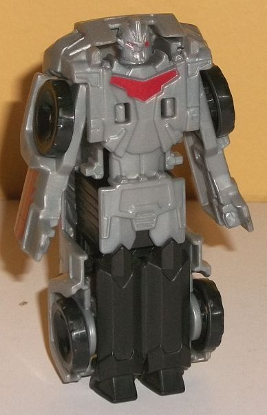

Difficulty of Transformation : Very Easy
Color Scheme : Metallic yellowish orange, black, light milky gray, and some pale metallic red and metallic royal purple
Individual Rating : 2.7
Allegiances
: Decepticon
Size
: Combiner Set
Overall Rating
: 3.8
 Drag
Strip
Drag
Strip
Difficulty of Transformation
: Very
Easy
Color Scheme
: Metallic yellowish
orange, black, light milky gray, and some pale metallic red and metallic
royal purple
Individual Rating
: 2.7
As opposed to his
Crash
Combiner
version-- which, at least mold-wise, was a callback to his
G1 alt mode-- this version of Drag Strip fits his show design both in colors
AND in alt mode, being a rather sleek, angular sportscar. There's LOTS
of angles on this guy-- little spikes on the front end, spiky headlights,
angular windows, a rather pointy back end, and a little two-pronged spoiler
on the back end that's also rather angle-y. Despite all these angles, though,
there's little actual mold detailing in this mode beyond the absolute bare-bones
basics like the windows and a couple of swept-back details on his front
bumper. There's no really bad robot mode extras in this mode, but the robot
head can be seen sticking out of the back end a bit if you look at him
from a rear-oriented view. It just barely does, though, so it's not a huge
issue. Drag Strip's main color in this mode by far is a really nice shade
of yellowish orange that has quite a lot of glitter mixed in to the point
where it looks outright metallic-- it's a GREAT shade of a color I'm not
normally fold of (yellow). His tires are black and his spoiler is a light
milky gray. His only paint apps in this mode are a thin metallic royal
purple strip on the bottom of his front bumper pale metallic red on his
windows. The red both contrasts and complements the yellow-orange nicely,
and the purple is a great callback to his G1 self. Unfortunately, it's
used so little here it barely has any effect on the color scheme. I really
wish he had more purple in this mode. There's a hole on the roof of this
mode for you to plug in a Mini-Con Weaponzier or a weapon with a similarly-sized
peg into Drag Strip for some firepower.
Drag Strip's transformation
is barely one. Fold out the sides to form the arms, and then rotate his
front hood forward to form his feet. Then stand him up and you're done.
Now, on a really really tiny toy this would be okay I guess, but this toy
is about the size of his Crash Combiner toy-- this is way too simple. Basically
his entire mode is just molded onto the bottom of the vehicle. Granted,
at least on the body, it's pretty decent mold detailing. He's got a head
that's curved at the side with cup-like "ears", a "normal" face with red
eyes, and chin guards. His chest looks like a crumpled-up car front, with
some more angular lines on the abs and waist. His leg detailing is too
simple, just being some VERY basic knee details separated by a set of lines
down the middle to delineate the separation between the legs. His arms
have some undersized fists molded into them near the bottom, but don't
look so hot either. Pus, he doesn't really have feet to speak of-- just
a very obvious car hood upside-down to get him stable. It all looks pretty
bad. Beyond the red eyes, the only other paint in this mode is more of
that metallic purple on his chest. It's a great shade of the color and
offsets the light milky gray and black that dominate more of this mode,
but there really needed to be more paint, here. Lastly, he has absolutely
no articulation beyond his arms being able to move in-and-out slightly
at the shoulders-- he's a brick.
 Heatseeker
Heatseeker

Difficulty of Transformation
: Very
Easy
Color Scheme:
Light milky gray,
black, and some moderately dark red
Individual Rating
: 1.9
Heatseeker's an SUV--
there's no real G1 Stunticon "version" of this character, he's a brand
new dude. Like the other RID2015 Stunticons, he's a bit "edgy" with a lot
of hard angles. He's got angular headlights, "teeth" on his front grill,
almost square wheel covers, and a couple of little bits coming off the
back end that I guess could be considered a mini-spoiler? Hard to say.
He does have some "robot kibble", but it's VERY minor-- just the tips of
his feet can be seen sticking out of the back end, on a hinge that unfortunately
bisects the back section/rear window in two. The VERY top of the head can
also be seen peeking out underneath the front bumper. Both are minor for
the size. The only proportional malady he has is that the roof doesn't
come up quite high enough above the surrounding body; this makes the windows
look a bit too small. It's not a HUGE deal, but it is noticeable. He's
also got some more minor details like rear view mirrors and little "racks"
on the top of his roof-- it's detailed enough to fit in with the RID2015
aesthetic, though a few more details here and there on the sides would've
looked cool. He's almost entirely that blah light milky gray color in this
mode, which definitely isn't my favorite color. He's got some black tires,
but that's it. His windows are painted a fairly dark red, and he also has
some cool stripe/jagged stripe paint apps along his doors, but that's it.
More paint to break up the gray was really needed, especially on the front
sections. He does have a hole in the roof where you can plug in a Mini-Con
Weaponizer or weapon with a similarly-sized port for some weaponry in this
mode.
To transform Heatseeker,
you just stand him up on his back end and fold his arms out from the sides--
it couldn't be much simpler. As a result, this is a pretty darned poor
mode. The proportions are ALL out-of-whack, with Heatseeker looking too
skinny proportionally, having his proportions stretched too long to fit
under the vehicle. His hands are just the car doors splayed outwards, with
just barely-identifiable hands molded on the ends. He also has no meaningful
articulation, since his shoulders can only move a little bit in-and-out
for the transformation. And of course, like most other individual robot
modes for RID2015 Combiners, Heatseeker's robot mode is just molded onto
the underside of the vehicle mode, with the front bumper coming up off
of his shoulders a bit obnoxiously. His headsculpt is pretty awesome, with
small pointed "ears" and a multi-layered, armored head with large chin
guards and a round "targeting" eye alongside a more normal eye and mouth.
He's got some faux "crumpled vehicle front" bits on his chest, and some
details on his pelvis that look like his front bumper meshed up. His legs
are pretty sparse and unremarkable as far as the mold detailing goes, having
some basic pointy details on the knees and ankles, and a bit of an indentation
to tell you where the legs theoretically should separate. Paint detailing
is very sparse in this mode-- just a bit more dark red on his chest "window"
and on his eyes, and that's it. So yet again, he despeartely needs something
else to break up all this gray-- the black on the wheels and lower legs
helps little.
 Motormaster
Motormaster
Difficulty of Transformation
: Easy
Color Scheme
: Light milky gray,
black, and some dark metallic purple and moderately dark red
Individual Rating
: 6.2
Motormaster here is the
main component, and thus a little more than twice the size of the other
Stunticons in this set. In vehicle mode he shares a lot in common with
his G1 version, being a truck, although instead of an obvious trailer hinge
that connects the cab portion to a back storage portion, like RID2015 Optimus
his cab and trailer "merge" a bit with the trailer being more of an extended
back body to the cab. Although the silhouette to this mode looks pretty
good, the way the back two-thirds are divided up, it's WAY too obvious
they separate in half to form the legs and shoulders/arms of the other
two modes. There's a BIG crevasse in the middle of the mode, and if you
look at Motormaster straight-on from the side you can actually see through
the whole body in some places. On the back end there's a sizeable gap as
well, and his entire back end is just composed of folded-in hinges and
combiner connection ports. Additionally, the middle two wheels on each
side are simply molded in instead of being actual rotating wheels, which
means he can't roll very well. The overall "style" of the toy-- particularly
the cab-- looks pretty good, and fits in with the other Stunticons in being
a bit "angry-looking" with angular windows and a no-nonsense look overall.
He's got tiny slits for windows on the front, along with a small grill
but large side bumpers. The front sides have some ridges, but there isn't
anything too elaborate there since the arms have to swing over those pieces
for the transformation. There's some angular bumps along the top with what
look like vents in those angular bumps, and some more vent details along
the sides, though given all the gaps there's not much detailing on the
sides. His color scheme is mostly a very bland light milky gray, which
doesn't excite me. I would have appreciated more of the black, which is
mostly relegated to his wheels and the middle side portions in this mode.
(That said, those paint apps on the side-- mixed in with the dark purple
stripes there and the dark purple bits on the sides of his angular top
bumps-- looks pretty good. The purple could stand to be a BIT lighter for
better contrast with the black, though. It should also be noted that the
Decepticon scan symbol for the whole combiner is on Motormaster's left
side here-- for the Combiner sets, only the main component gets a scan
symbol, not each individual toy.) There's also a ridge of black paint along
the front that, while cool, doesn't match his actual molded-in windows
or any other detailing there. The last bit of black is on a piece on the
top rear of his cab portion, which becomes his combiner head. It has a
hole in it that you can fit in a Mini-Con Weaponizer or a weapon with a
similarly-sized port.
As you'd expect from
the vehicle mode, fold out the arms from the sides, fold down the bottom
portions and then rotate the lower portions of those and flip out feet
to form the legs, and then flip up on a little tab on the top of the cab
to lift up the head-- voila, you're done. The main body looks okay, with
the front of the vehicle mode making for a great chest, and Motormaster's
headsculpt being a great stylized update of the G1 "boxhead", with a very
square but angled-back box surrounding a headsculpt that honestly looks
a bit like Megatron's, what with a furrowed, deep, flat brow, large chin
guards, and a "normal" mouth and eyes (with the latter painted red-- his
only robot-specific paint apps). His legs are pretty straightforward, with
some basic molded-in details on the waist and upper legs, but not much
added beyond what's already been there for vehicle mode, with the wheels
on the sides. For the lower legs, the wheels are on the back, and he's
got nice angular knees with folded-down feet that hide the connector ports
behind them-- a nice touch. The feet look like hooves, which is a nice
original touch for a guy who likes to smash through stuff. The shoulders
look great, having that great mold and paint detailing from the alt mode,
but the lower arms don't have HANDS! That seems like a pretty darned important
detail to leave out! Instead it's just the back upper halves of his vehicle
mode with the combiner port clips still folded in to give them a bit of
mass. His arms and legs overall seem a bit too long proportionally compared
to his main body and head-- either they should have been shorter or his
head/body longer. For articulation in this mode, Motormaster can move side-to-side
at the shoulders, elbows (at two points), and at the hips, while his knees
can rotate. That's it-- no forward motion at all, which is really a shame
for a toy roughly the size of a warrior. I understand articulation isn't
the point of these, but they couldn't put in forward shoulder or hip movement?
Seriously?
 Slashmark
Slashmark
Difficulty of Transformation
: Very
Easy
Color Scheme:
Light milky gray,
black, and some metallic dark blue and moderately dark red
Individual Rating
: 2.1
Slashmark uses the same
base mold as Heatseeker, and he has the same plastic colors in the same
spots as well-- that is, he's mostly a light milky gray, with black on
the wheels and the lower robot legs. For Slashmark specifically, he has
some black paint on his windows compared to Heatseeker's red, though he
has a REALLY nice shade of metallic dark blue used on his vehicle roof
and on much of his faux vehicle chest in robot mode. It really contrasts
excellently against all that boring light milky gray-- I really wish there
was more of it. He also has just a touch of red used on his eyes in robot
mode, but nowhere else.
There are two minor
mold changes made to Slashmark when compared to Heatseeker, and both of
them are only visible in robot mode. For one, the headsculpt is different--
Slashmark's is a more straightforward "Roman helmet"-style head, with rounded
"ears", a bit of a center antennae sticking up out of his forehead, and
a normal eye and mouth with large chin guards. It's a decent headsculpt,
but Heatseeker's is definitely more unique. The pelvis details have also
been changed, with Slashmark's pelvis looking more like a multi-layered
armored samurai-style "skirt" compared to Heatseeker's compressed bumper
details.
 Wildbreak
Wildbreak
Difficulty of Transformation
: Very
Easy
Color Scheme
: Milky dark blue, black,
light milky gray, and some dark dull red and moderately dark red
Individual Rating
: 2.4
Wildbreak uses the same
base mold as Drag Strip, which is accurate to the show. The main difference
here comes with the color scheme, which has a decidedly darker tone than
Drag Strip's. Wildbreak is basically the "fill-in" in this team of Stunticons
for the traditional Stunticon
Breakdown
,
who died in Prime. Wildbreak takes Prime Breakdown's same basic colors,
though, with his vehicle mode being almost entirely a dark milky blue.
It's a pretty decent shade and contrasts well against Drag Strip, but I
wish it had the same metallic sheen his mold-mate does. The black and light
gray are at the exact same spots here as on Drag Strip-- that is, black
tires and a lower body in robot mode, and a light milky gray spoiler and
upper body and head in robot mode. There's also some dark dull red paint
used on his windows in vehicle mode-- I think it should have been brighter
to help contrast against the dark blue better, especially since there's
no other paint on Wildbreak in vehicle mode. In robot mode, a slightly
lighter (but still fairly dark) shade of red is used on his eyes and chest,
but again-- no other paint apps.
Wildbreak does have
two mold changes compared to Drag Strip, both of them pretty darned minor.
For one, his spoiler sits a bit more horizontally and doesn't poke up as
much. The second is that the headsculpt is diffferent (though the chest
and ab details on the same piece are not). Wildbreak's headsculpt has Frankenstein's
Monster "bolt"-like bits coming out of the sides of his skill, along with
a somewhat flat head with an indentation in the middle of the forehead,
chin guards, and a fairly "normal" face and mouth with two eyes. It looks
okay, but not as good as Drag Strip's headsculpt.
 Menasor
(Combined Form)
Menasor
(Combined Form)

Difficulty of Transformation
: Medium
Individual Rating
: 7.4
The combiner form is, of course, Menasor, and as with basically all the Combiner Force combiner toys, the combined mode is the best. The torso and upper legs formed from Motormaster look the best, with a thick main body and WIDE shoulders (I would argue too wide, but then again their wideness also keeps the arms from clashing into the legs). There really isn't any kibble to speak of. The front of Motormaster's truck mode makes up the stomach, while the waist and upper legs are pretty much just Motormaster's, but they're still fairly proportional. The headsculpt for Menasor is pretty spot-on-- it's got a "normal" silver face with red eyes and a Prime-like helmet with vents on the sides, a center vent, and angled antennae at the sides. However, when it comes to show accuracy, the antennae are shorter for safety reasons. The legs are also pretty decent and proportional, at least from a frontal view. From a side view, you can see the hollow bits on the back formed by rotating the section of those two SUV Stunticons forward. The pieces which form Slashmark and Heatseeker's individual legs are now kneecaps, but they're a bit too far in front of the knees for my liking and REALLY needed some purple paint to be even remotely accurate to the show (though let's be honest, getting that show model with even a remotely simple transformation is impossible). The arms are basically just Drag Strip and Wildbreak in their alt modes, but with the center parts slide out a bit to lengthen the arms some more. Oh, and hands are folded out from the front bumpers and look pretty good, with some good knuckle and finger details and a thumb that can rotate to either end of the hand, since Drag Strip and Wildbreak can form either arm, just like Slashmark and Heatseeker can form either leg. The arms are far too stiff-looking, though, and where the upper arm becomes the lower arm just isn't obvious enough. For a weapon, Menasor comes with a large, rather royal-looking sword, with some nice spikes on the hilt. It can also be stored on either side of his back via a peg-slot combination, which is a cool addition. However, it only has painted black details on the blade on one side! That's rather cheap-- the other side is just plain gray. And that's my major issue with Menasor's color scheme as a whole-- too much gray. Sure, Motormaster has always had some gray on him, but not THIS much, and having both Heatseeker and Slashmark form mostly gray legs doesn't help add enough color variety. Wildbreak is of course mostly dark blue, which helps tie him in with Slashmark some-- I like to keep both of them on the same side of Menasor. Drag Strip's yellow is an okay addition, but kind of random and doesn't really work with the rest of the team. All in all, the combined color scheme is a little boring, especially when you look at how colorful the show model is. For articulation, Menasor can move back-and-forth at the shoulders, side-to-side at the hips, and side-to-side at the ankles. His thumbs can also move up and down some to get that sword secure in there, but like most Combiner Force toys, he doesn't have much articulation.
I really like the idea
of simplified combiners that younger kids can put together without having
to spend half an hour getting all the components ready, but I think the
execution was pretty botched, here. The limb Stunticons have nice alt modes,
but they're just BARELY more than vehicles with the entire robot modes
molded onto their bottom sides. Heatseeker & Slashmark look particularly
bad in robot mode. Motormaster is decent, but his proportions are still
a bit off and the lack of any real hands is a bummer. The combiner is definitely
the star of this set, with Motormaster a distant second, and the individual
limb bots best left in their alt modes. The color scheme is also largely
bland, with too much light milky gray, and the articulation even for Motormaster
and Menasor is needlessly restricted. Not recommended-- my least favorite
of the RID2015 Combiner Sets.
Reviews by Beastbot